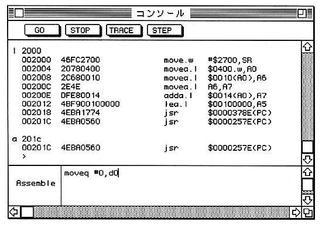

Description Interactive line assembly is performed from the address expr. The mnemonic and addressing mode notation follows the Motorola definition, Note that overflow during expression evaluation is ignored. If expr is omitted, the next address after the last A command is used. During interactive line assembly, the following program is displayed in the input area of the console window. Prompt is displayed.

● To end interactive line assembly, enter the string "/" or "." Yes. ● You can return to the previous address by entering the character string "^" or "-". ● Entering an empty string advances to the next address without changing the contents of the current address. You can ● Absolute address specification is interpreted as follows. expr Absolute long address expr.l Absolute long address expr.w Absolute short address
Description The address range range is disassembled. For range, both from and to can be omitted. When from is omitted, the last L command If to is omitted for the next address after completion, from + $ 1F is adopted. If from is an odd number, it is rounded to an even number.